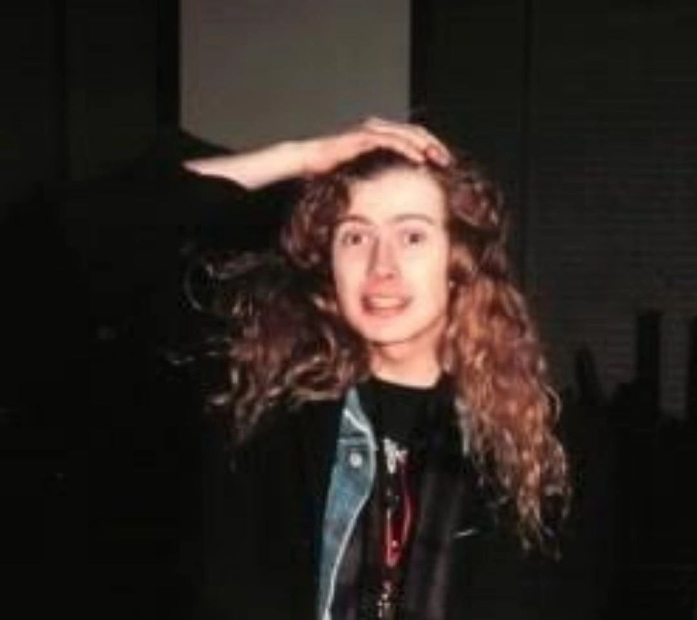
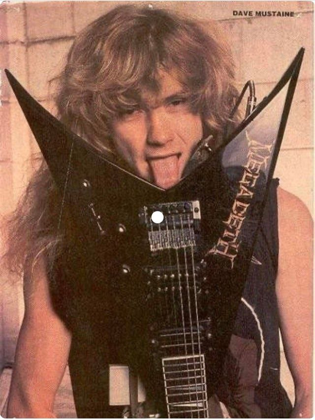

Дейв Мастейн
 
Биогафия
Амеиканский гитарист вертуоз и сонграйтер. Первый гитарист группы Metallica и основатель группы Megadeth. Создатель направления Trash metal (по собственному заявлению)
В 14 пееехал в Лос-Анджелес. В 20 попал в Metallica, откуда его выгнали за черезменую любовь к дракам и алкоголю.
На его творчество оказыли влияние гуппы:
- Aerosmith
- Led Zepplin
- Black Sabbath
Дискогафия
За всю каьеру записал 16 альбомов и причастен к трём альбомам Metallica
C Metallica:
- Kill 'em all
- Ride the lightning
- Master of puppets
С Megadeth:
- Killing Is My Business
- Peace Sells
- So Far, So Good… So What!
- Rust in Peace
- Countdown to Extinction
- Youthanasia
- Cryptic Writings
- Risk
- The world needs a hero
- The system has failed
- United Abominations
- Endgame
- Th1rt3en
- Super Collider
- Dystopia
- The Sick, the Dying… and the Dead!
Мой любимый альбом
Rust in peace - является четвёртым студийным альбомом, вышел в 1990 году. Мне очень нравится этот альбом из-за его звука, гитаных партий и остро-политических текстов, которые сново стали актуальны.